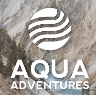

Overview
Purpose
At AquaAdventures, our goal is to provide thrilling white water rafting experiences that create lifelong memories. We recognize that in today's digital age, having a strong online presence is essential to reaching and engaging with our adventure-seeking audience. Our website serves as an integral part of our business strategy, aiming to achieve the following goals: 1. Inform and Inspire: We aim to inform potential customers about our range of white water rafting trips, showcasing the stunning natural beauty of the locations we operate in and the excitement of our adventures. Through vivid imagery, videos, and detailed trip descriptions, we inspire our visitors to embark on their own aquatic journey with AquaAdventures. 2. Booking and Convenience: Our website simplifies the booking process, making it convenient for adventure enthusiasts to reserve their spots on our trips. We offer an easy-to-navigate interface, secure payment options, and real-time availability updates to ensure a seamless booking experience. 3. Educate and Prepare: Safety is paramount in the world of white water rafting. We use our website as a platform to educate our customers about safety measures, equipment, and what to expect during their adventure. This ensures that our guests are well-prepared for an exhilarating but safe experience on the water. 4. Build Trust and Community: We foster trust by providing testimonials, reviews, and certifications that highlight our expertise and commitment to safety and customer satisfaction. Our website also aims to build a community of like-minded adventurers, with a blog and social media integration to share stories, tips, and updates. 5. Customer Support and Feedback: We offer accessible customer support through our website, providing answers to frequently asked questions and a means to get in touch with our team. We actively seek feedback from our customers to continually improve our services and website user experience. 6. Drive Revenue: Ultimately, our website is a revenue-generating tool. We aim to convert website visitors into paying customers by offering compelling trip packages, special promotions, and incentives to book with AquaAdventures. Our website is not just an online presence but a dynamic platform that enhances the overall AquaAdventures experience. It reflects our commitment to safety, adventure, and customer satisfaction while contributing to the growth and success of our business.
Audience
Our primary target audience comprises: 1. Adventure Enthusiasts: These individuals are typically in the age range of 18 to 45, seeking thrilling and adrenaline-pumping experiences. They have a strong desire to explore the outdoors, experience nature's beauty, and challenge themselves physically and mentally. 2. Active Vacationers: Many of our customers are vacationers looking for unique and memorable experiences during their holidays. They often have a moderate to comfortable financial situation and are willing to invest in adventures that offer excitement and lifelong memories. 3. Nature Lovers: Our audience includes nature enthusiasts who appreciate the beauty of natural landscapes, including rivers, canyons, and wilderness areas. They have a keen interest in outdoor activities that allow them to connect with nature. 4. Group and Team Builders: We also cater to corporate teams, school groups, and organizations seeking team-building activities. These customers are looking for experiences that foster teamwork, communication, and camaraderie among their members. What They Want: • Excitement and Adventure: Our audience seeks thrilling experiences that push their limits and provide a sense of achievement. • Unforgettable Memories: They want to create lasting memories and stories to share with friends and family. • Connection with Nature: Nature lovers desire to immerse themselves in natural environments and explore the wilderness. • Convenience: An easy and convenient booking process and access to all the information they need to plan their adventure. • Safety Assurance: They require confidence in our safety measures and expertise. Unmet Needs: • Comprehensive Information: A single source for detailed information about our rafting trips, including itineraries, pricing, safety precautions, and equipment details. • User-Friendly Booking: An intuitive booking system that simplifies the reservation process and provides real-time availability updates. • Community and Resources: A platform to engage with like-minded adventure enthusiasts, share experiences, and access resources like safety guides and packing lists. • Accessibility: The ability to access our website from various devices, including desktop computers, laptops, and mobile devices, to accommodate different browsing preferences. Accessing the Website: Our target audience is likely to access the AquaAdventures website through a variety of devices, including desktop and laptop computers for in-depth trip planning and booking. However, due to the dynamic nature of adventure travel planning, mobile devices will be a popular choice for quick access to trip information and last-minute bookings while on the go. Ensuring a responsive and mobile-friendly design is essential to meet their needs effectively.
Branding
Website Logo
Style Guide
Color Palette
Palette URL:
https://coolors.co/7a7265-c0b7b1-8e6e53-c69c72-433e3f| Primary | Secondary | Accent 1 | Accent 2 | Accent 3 |
|---|---|---|---|---|
| [#c0b7b1] | [#7a7265] | [#8e6e53] | [#c69c72] | [#433e3f] |
Typography
Heading Font: Inria Serif
Paragraph Font: Roboto
Normal paragraph example
The best Whitewater Rafting in Colorado, White Water Rafting Company offers rafting on the Colorado and Roaring Fork Rivers in Glenwood Springs. Since 1974, we have been family owned and operated, rafting the Shoshone section of Glenwood Canyon and beyond.
Colored paragraph example
Trips vary from mild and great for families, to trips exclusively for physically fit and experienced rafters. No matter what type of river adventures you are seeking, White Water Rafting Company can make it happen for you.
Navigation
Site Map
Wireframes
Home